3. Computer Vision
1. Computer Vision
Azure té bàsicament 2 serveis d'anàlisi d'imatges:
- Computer Vision→ Analitza el contingut d'imatges i vídeos.
- Custom Vision→ Ens permet personalitzar el reconeixement d'imatges per adaptar-lo a les nostres necessitats.
Ens centrem de moment en computer vision. Computer Vision ens permet→
-
Detectar elements en una imatge 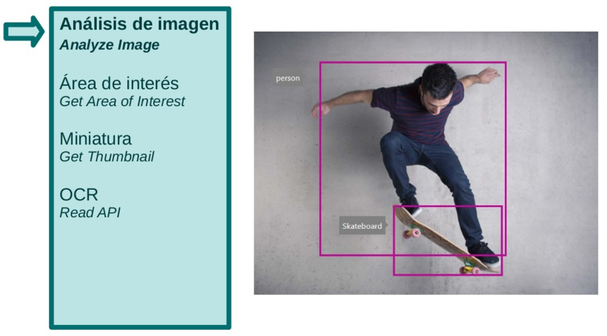
-
Obtenir les coordenades d'un rectangle que delimita l'àrea principal d'interès
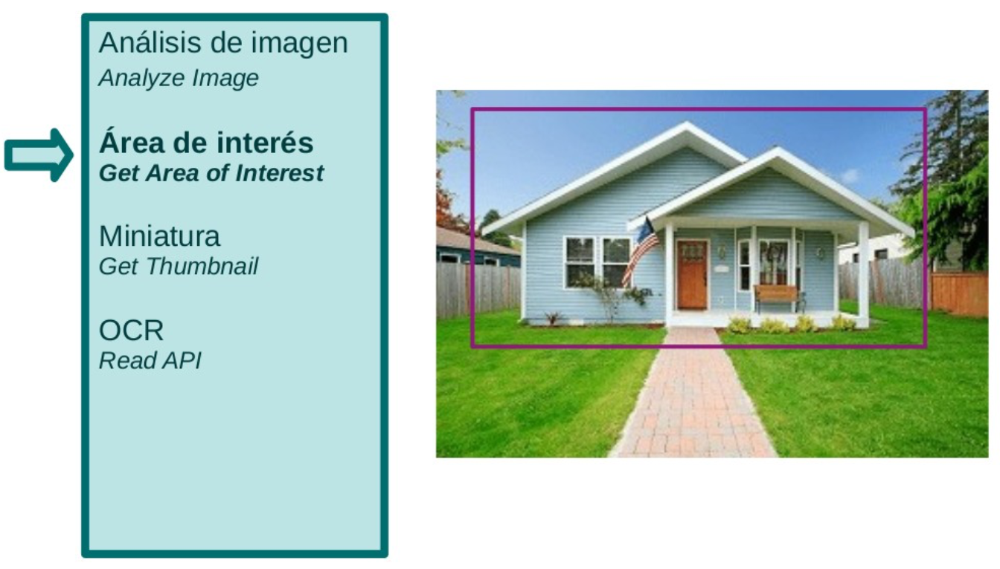 * Ens permet fer miniatures centrant-nos només en una zona d'interès.
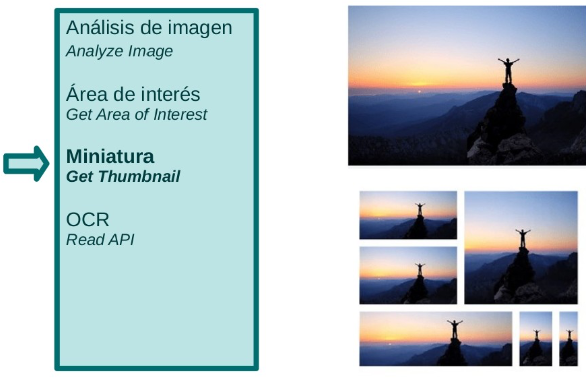 * Reconèixer text imprès o escrit a mà en imatges i PDFs (OCR)
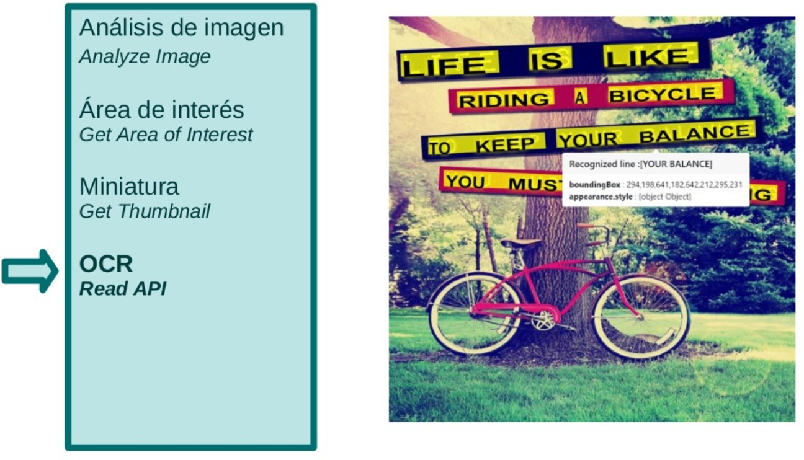
2. Anàlisi d'imatges
Quan utilitzem la funcionalitat d'anàlisi d'imatge podrem sol·licitar al servei les característiques següents→
- Categoria → classificació de la imatge dins una llista tancada de categories i subcategories.
- Etiquetes → llista de paraules rellevants per al contingut de la imatge. Es pot sol·licitar amb la funcionalitat Independent Tag Image.
- Descripció → genera una descripció de la imatge en una frase en llenguatge natural. Es pot sol·licitar amb la funcionalitat Independent Describe Image.
- Objectes → llista d'objectes trobats a la imatge, indicant per a cadascun el tipus d'objecte i les coordenades del rectangle que el delimita. Es pot sol·licitar amb la funcionalitat independent Detect Objects.
- Cares → llista de cares trobades a la imatge. Per a cada cara, se n'obté el rectangle associat, el gènere i l'edat estimada.
- Color → color dominant (de primer pla i fons) i color d'èmfasi de la imatge. També determina si la imatge és blanc i negre.
- Marques → marques comercials reconegudes a la imatge.
- Adults → determina si el contingut de la imatge pot ser catalogat com contingut per a adults, pujat de to o violent.
- Tipus d'imatge → detecta si la imatge és un dibuix o imatge predissenyada.
2.1. Creant peticions
Preparant la petició
Info
La petició que ens ha permés efectuar l'anàlisi és client.analyze_image(url_image,visual_features=visual_features). Com podem veure:
- li pasem la url de la imatge a estudiar
- Li indiquem les característiques que volem obtenir de la mateixa
- En compte de
analyze_imagepodem cridar aanalyze_image_in_streampassant-li la imatge pròpiament dita en compte de la url de la mateixa.
2.2. Processant les respostes
El servei ens retornarà un objecte del tipus ImageAnalysis, que contindrà, segons el demanat les següents claus, del tipus indicant:
Pot consultar-se si tenim o no dits atributs:
dir(objecte)→ Retorna una llista amb els nom i mètodes del objecte.hasattr(objecte, element)→ retornaTruesi l'objecte te dit element.
Fixar-se que alguns atributs estan tancats entre claudàtors, el que significa que el valor retornat és una llista, i tindrem per tant una col·lecció d'objectes, com per exemple s'han detectat diversos objectes.
2.3. Dibuixant caixes i Àrees d'interes
Podem fer servir les llibreries de matplotlib combinades amb la llibreria PIL per a representar les imatges analitzades i afegir els mecanismes de detecció.
Una de les coses més habituals serà tancar en una caixa (rectangle) els objectes i cares detectades. És per això que tant els objectes FaceDescription com DetectedObject inclouen un atribut rectangle, amb les coordenades del vertex superior esquerre i l'alt i ample.
Dibuix de caixes sobre objectes
Prèviament:
- s'ha carregat en la variable
imgla imatge a processar. - El servei ens ha retornat l'estudi en la variable
analysis
2.4 Exercici.
A partit d'una imatge que tinga 3 o 4 objectes ben diferenciats has de :
- Pássala a Azure per a analitzar-la.
- A partir dels objectes que et retorna:
- Retalla cadascun dels objectes
- Guarda una imatge amb cada retall aconseguit
3. Miniatures
El servei de miniatures (thumbnail) no sols ens permet fer una versió reduïda de la imatge que facilitem, sinò el fer una miniatura del que es coneix com un retall intel·ligent o smart_croping.
El mètode que ens permet fer-ho és generate_thumbnail o generate_thumbnail_in_stream:
!!! example "Sintàxi del mètode"
| Python | |
|---|---|
| Text Only | |
|---|---|
1 | |
Aquesta operació genera una imatge en miniatura amb l'amplada i l'alçada especificades per l'usuari. Per defecte, el servei analitza la imatge, identifica la regió d'interès (ROI) i genera coordenades de retall intel·ligent basades en el ROI. El retall intel·ligent ajuda quan especifiqueu una relació d'aspecte diferent de la de la imatge d'entrada. Una resposta correcta conté el binari de la imatge en miniatura. Si la sol·licitud ha fallat, la resposta conté un codi d'error i un missatge per ajudar a determinar què ha fallat.
4. OCR des d'imatges
En aquesta secció anem a extreure text de les nostres imatges, el que és coneix com a OCR Optical Character Recognition. El text pot ser impres o manuscrit, així com les imatges poden estar online o passar-li nosaltres les pròpies imatges.
Abans de fer l'exemple anem a veure com fer una càrrega adequada de les credencial, per a que no estiguen hard-coded dins del nostre programa. Les claus les guaradarem en un arxius de claus, en un simple format json:
| JSON | |
|---|---|
Aquest fitxer el carregarem a un document json només iniciar el programa:
| Python | |
|---|---|
Anem a veure com quedaria ara la carrega de les credencials i la creació del client respecta als anteriors exemples
Carregant el client
A continuació necessitem carregar la imatge que tenim en un fitxer en un stream de bytes. Aquest stream és el que enviarem mitjançant el nostre client al servidor de Azure:
Enviem les dades i recuperem la operació
Azute no ens torna directament l'anàlisi de la imatge, sinò una nova url amb l'identificador de la operació (Operation-Location). Aquesta url te un aspecte com aquest:
https://la_teua_urscompvision.cognitiveservices.azure.com/vision/v3.2/read/analyzeResults/43ba3fb1-8670-4151-bc1d-28986c068e79
El que ens interessa agafar és el codi a partir de la última barra, per a demanar-li l'anàlisi de la imatge. Anem a veure el codi, explicat entre els comentaris
Arreplegant els resultats
Una possible eixida seria com la que es veu. De l'objecte read_result.analyze_result.read_results ens trobem una col·lecció d'objectes line, que tenen els següents atributs:
text→ mostra el text reconegutbounding_boxMostra les coordenades d'un polígon (habitualment un rectangle) que tanca el text detectat. No ha de ser un rectangle, ja que el text pot no estar en horizontal.
| Bash | |
|---|---|
Així, a partir d'aquesta imatge:

obtindrem alguna cosa com:
5. CustomVision
Custom Vision d'Azure és un servei de Microsoft que et permet construir, entrenar i implementar models de visió per computador personalitzats de manera senzilla i eficient. Bàsicament, es tracta de proporcionar eines perquè puguis ensenyar al teu sistema a reconèixer patrons visuals específics que siguin rellevants per al teu projecte o aplicació.
L'aspecte personalitzat de Custom Vision significa que pots entrenar el model amb les teves pròpies dades i requeriments, ajustant-lo al context específic del teu projecte. Això fa que sigui una eina versàtil i aplicable a una àmplia gamma d'indústries i casos d'ús, des de la vigilància fins a la classificació d'imatges en comerç electrònic.
Per utilitzar aquest servei haurem de fer dos passos:
- Entrenament del model
- Ús del model per fer una predicció.
5.1 Entrenament del model
Durant l´entrenament del model proporcionarem a Custom Vision imatges d´exemple amb l´etiqueta que aquestes imatges tenen associada. Com més exemples proporcionem dels diferents tipus d'imatges que volem reconèixer, més precisió tindrà el nostre model. Un cop subministrades les imatges, el model ha de ser entrenat perquè aprengui de les imatges aportades.
A Custom Vision els models s'organitzen en projectes. Cada projecte s'utilitzarà per a un domini específic, però es pot entrenar amb nous exemples i etiquetes les vegades que vulguem.
L'entrenament del model es pot fer des del portal https://customvision.ai o utilitzant l'API d'entrenament.
Molta cura
- En Custom Vision els models s'organitzen en projectes, i en la capa gratuïta sols ens permet tenir 2 projectes.
- Cada projecte pot ser entrenat amb nous exemples i etiquetes les vegades que vulguem.
Després d'entrenar el model, ens poden arribar noves fotos i podem voler incorporar aquestes imatges noves a una nova iteració per millorar la predicció. Cada cop que s'entreni el model se'n generarà una nova versió (iteració), i a l'hora de predir es podrà triar la iteració a utilitzar.
5.2 Predicció
Un cop preparat i entrenat el nostre model, podrem fer-lo servir per fer una predicció a partir d'una imatge nova. Per això utilitzarem l'API de predicció (Custom Vision - Prediction).
5.3 Pràctica - Detectem un conjunt de flors
El primer que hem de fer és crear el recurs de Custom Vision de la mateixa manera que creem els recursos. Sols recorda de marcar la tarifa d¡aprenentatge i previsió Free F0 que ens permet 2 peticions per segon en 2 projectes.
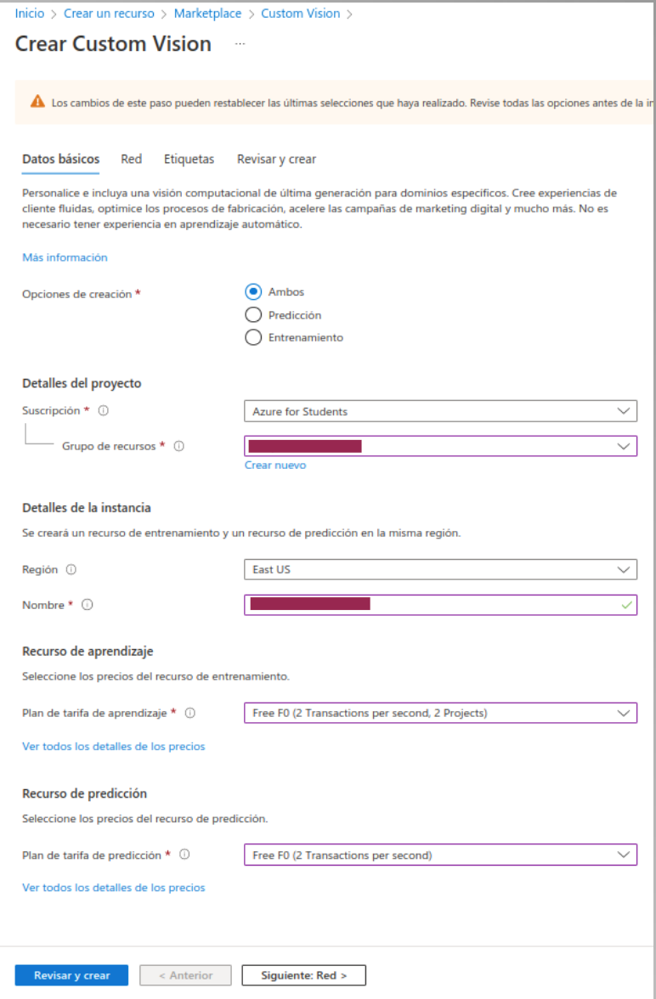
Un cop creat el recurs de Custom Vision, podràs comprovar que en realitat se n'han creat dos, amb el mateix prefixe: un és el model d'entrenament i l'altre el model de predicció.
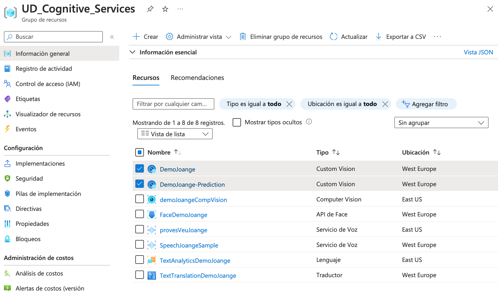
Tenir en compte que així com abans sols teniem una clau i un endpoint ara en tindrem per duplicat:
VISION_TRAINING_KEY, la clau del recurs d'entrenament.VISION_TRAINING_ENDPOINT, la url d'entrenament.VISION_PREDICTION_KEY, la clau del recurs de predicció.VISION_PREDICTION_ENDPOINT, la url del recurs de prediccióVISION_PREDICTION_RESOURCE_ID, el id del recurs de predicció.
Protegim les nostres claus
Per a aquesta pràctica no posarem els valors de les claus hardcoded al nostre codi, sinò mitjançant variables d'entorn
| Bash | |
|---|---|
desprès carregarem els valors de les variables d'entorn al nostre programa:
5.3.1. Entrenament de les dades
L'entrenament el podem efectuar desde el nostre codi, fent servir les llibreries del SDK de Python. La classe involucrada en l'entrenament de les imatges és CustomVisionTrainingClient, i pots trobar informació en aquest enllaç sobre dita classe.
Nosaltres per a l'entrenament farem servir la plataforma web https://www.customvision.ai/
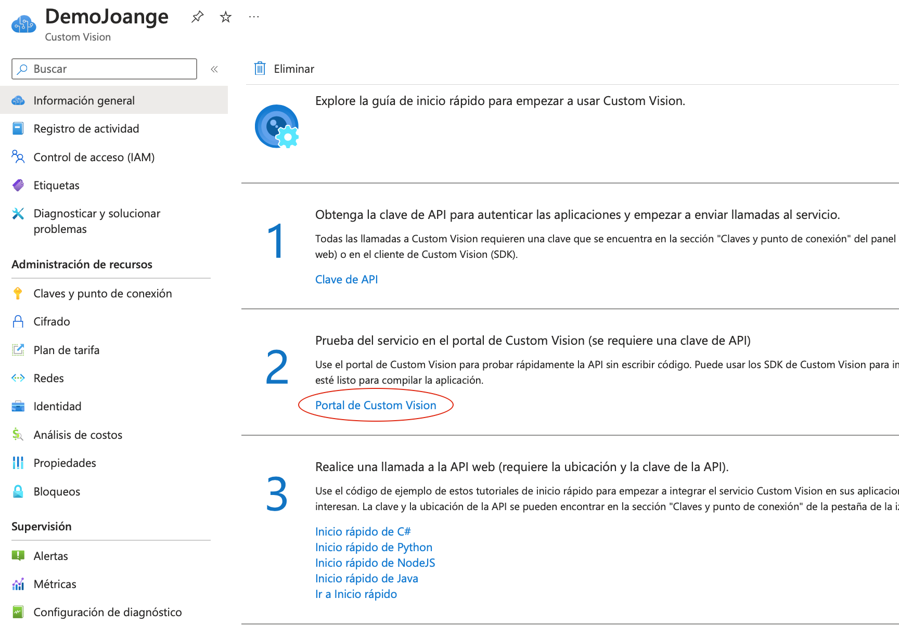
Pots trobar informació de com entrenar un model etiquetant i carregant a Azure mitjançant codi ací. Això ho demanarem en una pràctica posterior.
Desprès haurem de crear el projecte
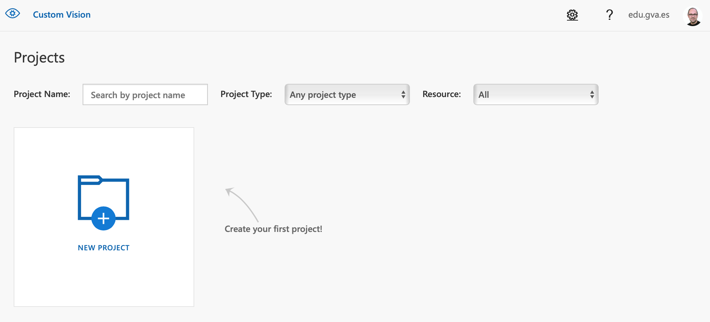
- Seleccionem com a recurs el que no acaba en prediction (per a entrenament).
- També ens pregunta el tipus de projecte i tenim 2 opcions:
- Classificació: A partir d'una imatge intentem que ens digui de quin tipus és.
- Detecció d'objectes: A partir d'una imatge podem detectar objectes diferenciant només els que m'interessin a mi.
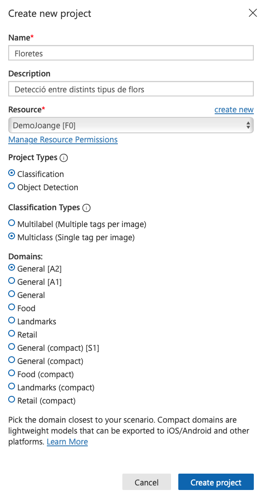
5.3.2 Afegint imatges per entrenar el model
Ara haurem d'afegir imatges per a entrenar el model. Resulta interessant fer el que us hauran comentat en altres moduls i també en aquest, de dividir les dades que tenim en un 80%-20% per a entrenament i per a test.
Haurem de pujar els datasets per a cada etiqueta que volem crear
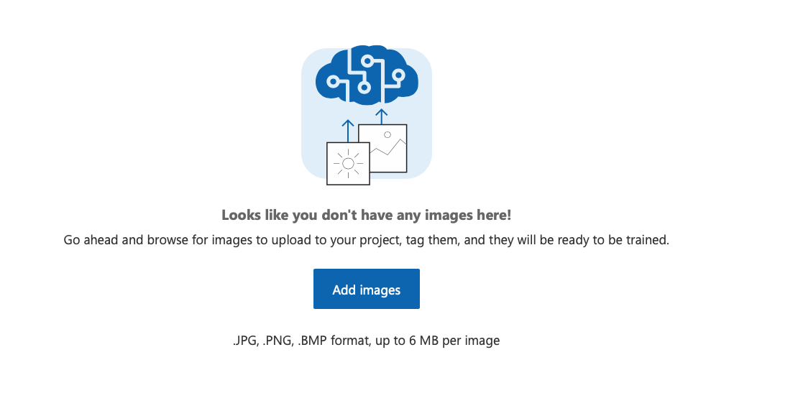
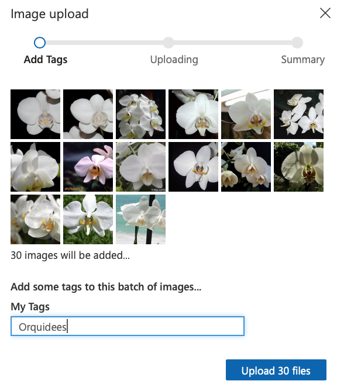
Finalment tenim un boto que ens diur Train, que ens permet executar l'entrenament. Li direm de fer-lo ràpid (al voltant d'un hora), cas d'imatges més simples o avançat, que trigarà més temps (fins i tot dies).
L'entrenament pot trigar una estona (segurament te per baix una xarxa neuronal convolucional) i en acabar moatrarà un resum 3 mesures que normalment s'utilitzen per a l'aprenentatge automàtic: Precision, Recall i AP. Ens diu la iteració perquè si canviéssim alguna cosa (noves imatges, etiquetes,...) i tornéssim a entrenar apareixeria una nova iteració.
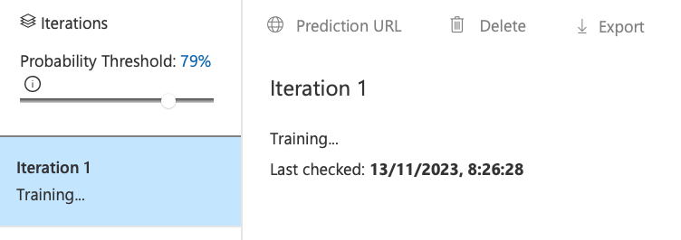
Li indicarem també l'umbral que volem per a considerar com a vàlid
Finalment li donarem a publicar dins del nostre recurs de predicció, i podrem veure les capçaleres i claus per a fer-lo servir:
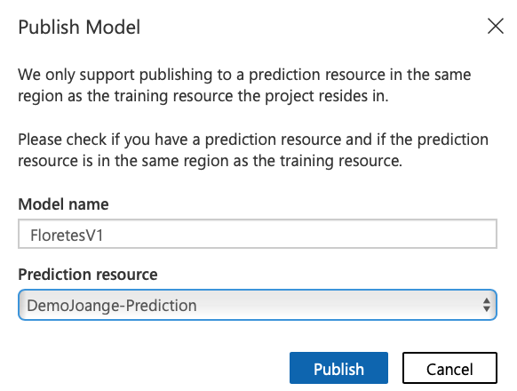
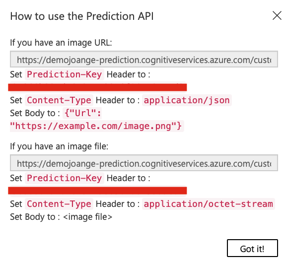|
5.3.3 Accedint al servei
Ens resta el accedir al servei per a fer prediccions d'imatges, evident-ment amb les no utilitzades